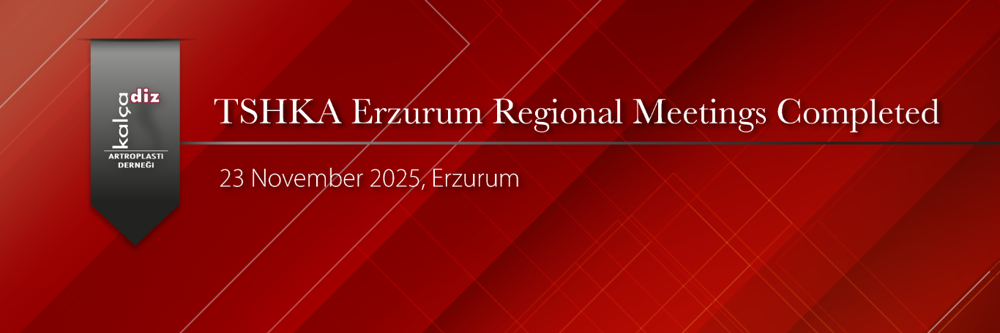

The KADAD Erzurum Regional Meeting, titled “Primary to Revision Hip Arthroplasty”, was held on November 23, 2025, at the Blue Hall of the Rectorate of Atatürk University in Erzurum, with the participation of 65 specialists and academicians from Erzurum, Kars, Ağrı, Rize, Trabzon, Gümüşhane, Erzincan, and Samsun.
High-level scientific presentations were delivered by instructors from the Orthopedics and Traumatology Departments of Rize, Samsun, Erzincan, and Erzurum Universities, as well as from the KADAD Board of Directors. All aspects of primary to revision hip arthroplasty were discussed in detail. Thanks to the excellent questions from the participants, highly productive and in-depth discussions took place.
As the KADAD Executive Board, we extend our sincere thanks to everyone who supported the congress with their participation and presentations, and especially to all members of the Department of Orthopedics and Traumatology at Erzurum Atatürk University for their warm hospitality, which provided the participants with two wonderful days filled with scientific, social, and gastronomic experiences.

Resim Galerisi